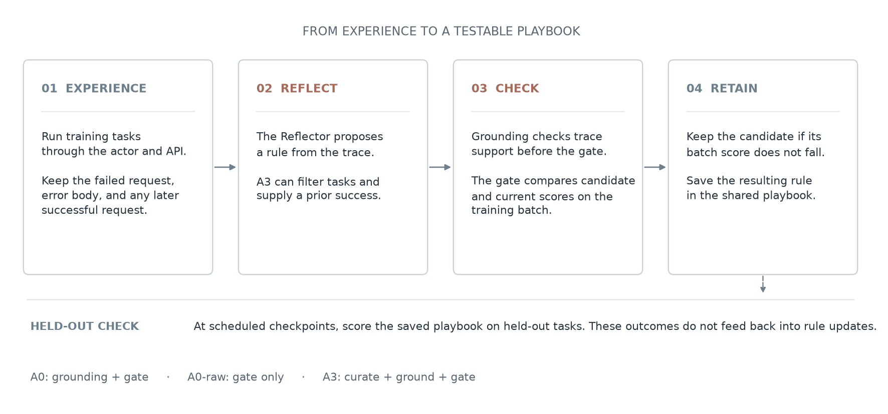
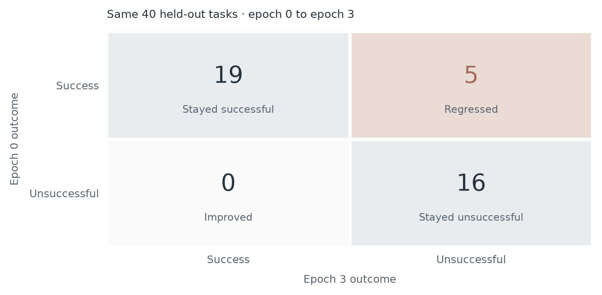
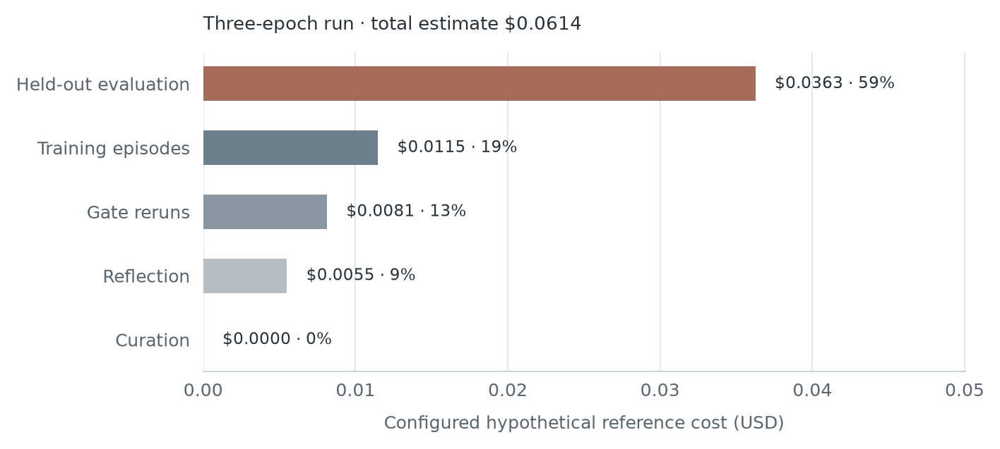

Does Curating What an Agent Learns Raise Plasticity per Dollar?
This project tests whether an API agent can turn failures into reliable playbook rules, separating trace support for a proposed rule from evidence that the rule helps on later tasks.
The evidence comes from early, single-seed A0 and A3 runs. It is useful for auditing the learning loop, not for establishing that a retained playbook caused a performance change; the observed score changes and their limits are reported in Results and Limitations.
What the papers contribute
Agent Plasticity: Measuring Self-Improvement Through Experience
Singh and colleagues evaluate self-improvement at checkpoints using training and held-out performance, learning cost, and diagnosis of failures in the improvement loop. This project borrows that measurement frame: score later tasks, track usage, and inspect where a proposed update succeeds or breaks.
GEPA-Curator: Curated Learning for Self Improving Agents
Yu and colleagues add two components to reflective prompt optimization: filter tasks likely to provide unreliable learning signals and retrieve a relevant prior success. A3 tests those ideas in this smaller synthetic API setting; it is not a reproduction of their benchmarks.
Why a failure needs to be diagnosed
An unsuccessful API task does not automatically mean the agent needs a new instruction. A response such as “Missing required authentication header ‘X-Api-Key’” points to a specific request change. A rate-limit response, an impossible task, or an unreliable evaluation does not establish a reusable request convention. If the Reflector treats each failure as a prompt defect, it can write broad rules from evidence that does not support them.
This study makes the evidence-to-rule step inspectable. For each failed task, the Reflector sees the failed request, the error body, and a later successful request when one exists. Its proposed rule must connect the observed error to a specific header, parameter, or field. A validator checks that connection and rejects instructions that contradict a supplied successful trace. When the trace does not show a safe fix, the Reflector should preserve the error as evidence rather than invent a correction.
Validation and curation address different sources of bad learning signal. A0 tests whether trace grounding filters unsupported rules; A0-raw removes that check. A3 also lets the Curator defer tasks likely to be uninformative and retrieve a prior success. The gate then checks whether a candidate changes the current training-batch score, while held-out tasks test whether the retained playbook transfers. Inspecting these stages helps locate where learning breaks: the task signal, the rule proposal, the validator, the gate, or the rule’s use on later work.
What we are testing
The agent carries a playbook between training epochs. After a failed task, the Reflector receives that task’s failed request, error body, and any later success for the same task. A validator checks whether the proposed rule is supported by those traces and rejects rules contradicted by a supplied successful request. Grounded candidates reach a gate that reruns the current training batch.
| Arm | Comparison |
|---|---|
| A0 | Grounding check, then batch gate. |
| A0-raw | Same Reflector prompt and gate, without grounding validation. |
| A3 | Curator can defer noisy or well-understood tasks and provide a relevant prior success; grounding and gate remain. |
The gate currently accepts a candidate when its total score is at least the previous score. It does not require every previously successful task to remain successful, and it does not deduplicate rules. With batches of 10, one task changes the score by 10 percentage points; a tie can hide both a regression and an improvement.
Task splits in the saved A0 run
“In-distribution” here means new task IDs drawn from the same task templates, not unseen instruction patterns. The generated “OOD” split is also drawn from the learnable templates used in training, and the real runner does not evaluate it. It therefore does not provide an independent out-of-distribution result.
| Split | Count and categories | How it is used |
|---|---|---|
| Training pool | 20: 10 learnable, 6 easy, 2 impossible, 2 unreliable/flaky-judge | Ten tasks are selected per training epoch; noisy categories are planted in training. |
| Held-out ID | 40: 10 easy, 30 learnable; no impossible or unreliable tasks | Evaluated at baseline and selected checkpoints. All 8 distinct ID instruction templates also occur in training. |
| Held-out OOD | 20: all learnable; 7 distinct templates, all also in training and ID | Generated but not evaluated by the saved real-run protocol. |

What happened in the first runs
The task transitions and paired comparisons are shown below. In the completed A0 run, the saved task labels show that the failures were on learnable tasks, not on the planted impossible or unreliable training cases.
| Run and comparison | Held-out success | Task outcomes from baseline | Exact paired p |
|---|---|---|---|
| Three-epoch A0 epoch 0 → 3 | 24/40 → 19/40 (60% → 47.5%) | 19 stayed successful; 16 stayed unsuccessful; 5 regressed; 0 improved | 0.0625 |
| Longer A0 epoch 0 → 4 evaluation | 24/40 → 22/40 (60% → 55%) | 22 stayed successful; 16 stayed unsuccessful; 2 regressed; 0 improved | 0.50 |
| A3, interim epoch 0 → 4 | 30/40 → 22/40 (75% → 55%) | 19 stayed successful; 7 stayed unsuccessful; 11 regressed; 3 improved | 0.0574 |
These p-values are two-sided exact McNemar tests on paired task outcomes.
The A3 checkpoint is interim: epochs 5–8 were still running when this result was recorded. Through epoch 4, the Curator made 40 decisions, including 13 skips and one prior-success anchor; one X-Api-Key rule was retained, and there were no terminal API failures. Those mechanism records do not establish that curation caused the held-out change.


All 16 tasks that failed at both checkpoints were labeled learnable; none were among the planted impossible or unreliable tasks. The five regressions were also learnable. The baseline failures therefore leave apparent headroom, although repeated instruction templates limit how much this says about generalization to new task patterns.
The gate accepted a tie with a regression
At epoch 3, the current and candidate training scores were both 5/10. The candidate was accepted even though a task that had passed now failed. Since the aggregate stayed level, at least one other task moved from failure to success. The accepted operations were duplicate copies of the same X-Api-Key rule, so the playbook ended with two entries but only one distinct instruction.
Proposal outcomes
| Saved run | Grounding rejects | Reflector API failures | Gate rejects | Rules retained |
|---|---|---|---|---|
| Three-epoch A0 | 2 | 0 | 1 (7/10 → 6/10) | 2 duplicate operations; 1 distinct rule |
| Longer A0, through epoch 5 | 0 | 6 timeouts, 2 each in epochs 2–4 | 2 (7/10 → 6/10; 9/10 → 8/10) | 0 |
The longer run’s six Reflector failures meant no rule proposal was evaluated in those three epochs. It reached epoch 5 with no retained rules, so it provides little evidence about whether reflection improves task performance.
One proposal traced from request to gate
Failed trace. A request to retrieve orders, sent without an authentication header, returned: “Missing required authentication header 'X-Api-Key'.” A later successful request to the same endpoint included the X-Api-Key header, with its value set to the API-key placeholder.
Reflector proposal. In plain language: when the orders request reports that the X-Api-Key header is missing, include that header and use the placeholder value seen in the successful request.
Validator and gate. The trace grounded the header rule, so it reached the gate. The candidate training score fell from 7/10 to 6/10, and the gate rejected it. This separates a grounded rule from a rule that helps the current batch.
A rejected rule that over-read its error
Trace. A saved proposal-audit record—not an older validator version—contains a request to create a user that passed the user data as a JSON-encoded string and received: “Bad request: invalid field 'body'.” There was no successful request quote for this task.
Proposal. The Reflector advised sending the user-creation request without a JSON body, claiming the API does not support creating users that way.
Recorded validator verdict. It rejected the proposal because its evidence quotes did not match the supplied traces verbatim: that is a formatting/provenance violation. Separately, the proposal over-read the error: it shows that this request’s body value had the wrong type, while the synthetic handler reads user fields from a body object and separately requires an Idempotency-Key header. The trace did not justify banning JSON bodies. The current validator would also reject that unsupported fix because no successful trace supports it; the saved decision itself did not establish that semantic point. This is a weakness worth naming: quote matching alone cannot detect a plausible-looking but unjustified inference.
Did the actor follow the retained rule?
In the epoch-3 held-out evaluation, the actor read the playbook on 34 of 40 tasks. The saved per-task evaluation rows do not link outcomes to the actual request headers, so they cannot show whether the actor included X-Api-Key after reading the rule. Rule adherence—and whether a failure came from a bad rule or failure to apply it—remains unmeasured.
In the completed run, held-out evaluation accounted for 59% of the configured reference-cost estimate because all 40 ID tasks were evaluated at baseline and epoch 3.
What would change my mind
Before running A0-raw and A3, set a practical threshold—for example, a five-percentage-point held-out difference across matched seeds. I would count grounding as helping if A0 beats A0-raw by at least that margin, the paired uncertainty interval excludes zero, and the rule audit finds fewer unsupported retained rules. I would count it as harmful if the direction reverses or task regressions increase. If intervals cover both outcomes, the result is inconclusive. A3 should be judged separately against A0 because it combines curation and prior-success retrieval.
A future protocol should preregister the gate criterion, use a larger gate batch or multiple gate batches, and separately audit per-task regressions and duplicate rules.
Limitations
The saved evidence comprises A0 seed 42 runs and one interim A3 seed-42 checkpoint. There is no repeated no-update baseline or A0-raw comparison, and the A0 and A3 runs are not matched in duration or checkpoint schedule. Thus the held-out changes reported in Results cannot be separated from run-to-run model variation or attributed to a playbook rule. Both paired tests are post-hoc and small.
The held-out ID set repeats the training instruction templates, and the generated OOD split repeats those templates too; moreover, the runner did not evaluate OOD. The saved results record playbook reads but not per-task header use. Retry logs record task IDs and retry numbers but omit the evaluation epoch. All 40 held-out task IDs produced at least one HTTP 429 retry record (80 records total), so every held-out task was retried at least once; rate limiting may therefore affect timing-sensitive outcomes. These runs use a synthetic API and do not establish performance on production APIs.
How I used Arize Phoenix
I used a local Arize Phoenix instance as the experiment-review layer, not as the source of scores or learning updates. Before a run, the runner creates or reuses a seed-specific held-out dataset containing opaque task IDs and sanitized task text. It refuses category labels and redacts test-key-like strings before upload, so Phoenix does not receive the hidden labels, expected answers, or the NVIDIA credential.
At each saved held-out checkpoint, the runner replays the saved per-task outcomes into a Phoenix experiment named by arm, seed, run tag, and epoch. Three deterministic code evaluators record whether the task succeeded, the number of steps used, and whether the actor read the playbook. In Phoenix, I use those checkpoint experiments to compare the same held-out dataset across arms and epochs—for example, baseline versus epoch 4 for A3—then use the local result files to investigate any surprising movement.
The workflow has two complementary records. Phoenix receives local OpenTelemetry spans with allowlisted run metadata such as arm, seed, epoch, phase, model ID, status, and token or latency summaries. The local JSON and JSONL artifacts retain the detailed episode outcomes, proposal decisions, gate comparisons, and retry events needed for audit. Prompts, model outputs, labels, and credentials are excluded from Phoenix spans; Phoenix is therefore a navigation and comparison surface, while the local artifacts remain the detailed evidence.
Appendix: instrumentation, hosting, and cost
For the completed three-epoch run, the configured hypothetical reference-cost estimate was about $0.061; the longer saved run was about $0.111 through checkpoint 5. These estimates are not provider charges.
Hosted inference used the NVIDIA API access available to me at no charge, with Nemotron for the actor and Llama 3.2 for Reflector/optimizer calls. The key is read from NVIDIA_API_KEY and is not included in the repository. Free access was rate-limited and experienced timeouts. Episodes retry up to three whole-episode attempts; if an API error persists, the episode is not scored as a task failure—the run stops instead. The completed held-out evaluations have zero terminal API failures. The scope and possible effect of the 429 retries are noted in Limitations.

To reproduce a short hosted run, start Phoenix locally, set NVIDIA_API_KEY, and run from the repository root:
python -m scripts.experiments.run_real_experiment --arm A0 --seed 42 --epochs 3 --eval-epochs 0,3 --run-tag demo
References
- Harman Singh et al. Agent Plasticity: Measuring Self-Improvement Through Experience. arXiv:2610.08902.
- Zack Yu et al. GEPA-Curator: Curated Learning for Self Improving Agents. arXiv:2610.37651.